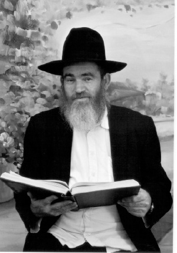
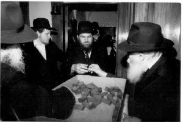

Spiritual Awakening in the City of Lights
Since he became involved in Judaism and Chassidus, R’ Kalman Eliezer Rotban has merited to see G-dly providence and the Rebbe’s tremendous love accompanying him with every step he takes. Answers and brachos, miracles and wonders, in his shlichus in Le Raincy in France, during his many visits to the Rebbe and after he made aliya. * A moving life story.

He is a child of Holocaust survivors. All his childhood stories were his parents’ horror stories – they had lost most of their family in the extermination camps, as well as stories of heroism – his father had served as an officer in a group of partisans in the Russian forests.
His parents settled in Lud and sent him to the local Chabad elementary school, but the atmosphere at home was not religious. After high school he did his army service in the armored corps and then continued to serve as a detective for the Tel Aviv police department and as a security agent for El-Al at the airport in Lud. It was in those years that he was named the Israel national champion in gymnastics.
It was then, while serving as a senior security agent at the terminal in Paris, with a good salary and his superiors very pleased with him, that his life took a turn. In one moment he decided to abandon his way of life and to return to tradition.
IN THE EL-AL TERMINAL IN PARIS
Lazer’s mother came from Hungary and his father from Poland. The two met after the war and married in a camp for survivors in Austria.
“My father’s stories were my constant companions during my childhood and continue to accompany me till this very day,” says R’ Rotban. He managed to escape the death camps in Poland, went to Russia and fought the Germans alongside the Red army. After his unit was decimated by the Germans, he hid in the forests that surrounded Gomel in White Russia, along with other Russian soldiers who survived and they fought the Germans together as partisans.
“Since my father was tall and blond, his friends sent him disguised as a German soldier, while they hid on the sides of the road. My father could speak fluent German and when a truck with German soldiers came, he directed them with his lantern straight into the partisans’ trap where they were killed. The Germans figured out what was going on and arrived with a large force in the forest. My father was caught along with ten other partisans and the Germans stood them up against a wall and shot them.
“They all fell dead except for my father who was seriously wounded. Since he fell like the rest of them, the Germans thought he was dead. Good people who found him afterward took him to a local hospital and from there he was taken to Austria. With devoted care he recovered from his injuries and survived.”
After his parents married, they made aliya and lived in an immigrant camp in Beer Yaakov. From there they moved to permanent housing in Lud. The only religious school in the area was run by Chabad. “Since my parents kept a smidgen of tradition, they sent me and my brother to learn there.”
R’ Kalman describes his mother as a real “Yiddishe Mama.” “My mother grew up in a Satmar home. Although the events that occurred in the war distanced her from her previous life, the chinuch she received stuck with her till her final day. She tried to bequeath it to us. My father ran a grocery store and my mother would take food products from the store every Friday and send me to distribute it to poor people living alone.”
When I asked him about life as a child of Holocaust survivors, R’ Kalman told me about the classes his father signed him up for when he was in second grade. “It was important to him that I be a strong person. At a relatively young age I competed as a gymnast in the Israeli nationals and took home some medals which pleased my father. We performed in acrobatic shows with singers on stages throughout the country.”
He attended the Chabad school until eighth grade. He nostalgically remembers the Chassidishe stories and the farbrengens with the teachers who returned from 770, but it would take some years until these things brought about a real change in him. He finished high school and spent his three years in the army tank corps in the north of the country on the Syrian border.
“That was during the War of Attrition against the Egyptians when the northern front was relatively quiet.”
When he completed his army service, he was drafted once again with the outbreak of the Yom Kippur war.
“Every minute that I remained alive during that war was an open miracle. We were bombarded with hails of mortars countless times but, against the odds, most of them missed. I remember a particularly severe attack by the Iraqi army. It was an entire night of nonstop shelling with no casualties. An open miracle. One night we went with the tank towards the rear in order to improve our position. In the morning, when we left the tank, we discovered that if we had gone one more meter back, we would have tumbled down into the abyss.”
When the war was over, in which many members of his unit were killed, Eliezer decided to join a detective unit in the Tel Aviv police force.
“For two years I was, what is called in police jargon, undercover. At that time the newspapers began exposing crime families in Israel. The police compiled a list of eleven families and we police detectives had to follow them. My mother did not like this at all, to say the least, and she urged me to leave the police. ‘Just not the police,’ she begged.
“After two years with the police, I left and took a course for security agents serving in the airport in which I did very well. I soon began to work. At first I was an undercover agent and would mix with the passengers, trying to identify suspicious characters. It was a job with tremendous responsibility. The passengers as well as those who visited the airport did not know that the visible security agents are only one link in the security chain, while the greater resources, both technological and human, are invested in undercover protection.
“After a successful period in this field, I was promoted and became a security agent for El-Al in Paris. I lived in Paris and met my wife there. At that time, I was not at all religious, but my wife came from a traditional home and she brought me back to the days I had learned in Chabad.”
MIRACLE APARTMENT 
The Rotbans got married in Eretz Yisroel and shortly afterward they returned to Paris. His wife continued her studies at a university while he planned to study law. What changed their plans was the fact that they were becoming more and more religious and were very close with the shliach, R’ Shmuel Asimov.
“I attended farbrengens and shiurim, and my kiruv process became very internal and deep. It all happened relatively quickly.
“It is very hard to describe the process. I was a free man who had no interest in tradition. The only day I went to shul was Yom Kippur. I can’t say I was searching for anything, but when I heard Chassidus I was hooked. What particularly bound me to the Rebbe was an incredible miracle that my wife and I experienced a year after we married.
“Until then we had lived in a tiny studio apartment in the heart of Paris. When our son was born we wanted to move to a bigger apartment but couldn’t afford it. I remembered the miracle stories that my teachers in the Chabad school would tell us about the Rebbe and we decided to write to the Rebbe and ask for his bracha. My wife had begun taking an interest in Chabad so she liked the idea. She wrote a three page letter at the end of which she asked for a bracha.
“A short while earlier I had worked for a French security consulting company, but since I was unwilling to work on Shabbos, I left and found a job in stock control in a Jewish owned company. The salary was much lower. I was also studying electronics at ORT. About a week after we sent the letter, I opened the mailbox and saw a letter from the French Housing Ministry which said we were eligible for an apartment from the government. We were dumbfounded. We hadn’t even submitted a request! We had never considered that we might be eligible. They invited us to see an apartment in a new building.
“We went to see the apartment and it was fabulous. It was new, beautiful and in an excellent location. The manager of the building asked me to bring my most recent salary stubs. I was a student at the time and I brought him the stubs that I had. He told us that they would soon be raffling off the apartments in the building and he would let us know which apartment we won.
“Some time went by. One Friday morning the phone rang and the man told us we had won the apartment we had seen. We were thrilled since the building was constructed in such a way that this was the only apartment that had a porch open to the sky, which we could use for a sukka. After the bureaucratic procedures were taken care of, we moved in.
“Two weeks went by and I had an astonishing dream. I entered the Rebbe’s room in 770 and the Rebbe gave me a letter. The dream was so real that when I woke up, it took me a long time to fall back asleep.
“The next morning I went to check the mailbox and was taken aback to find a letter from the Rebbe’s office. It was our first letter and was dated 3 Tammuz of that year. The Rebbe wrote, ‘Your request was received. I will mention it at the tziyun of the Rebbe, my father-in-law.’ It was like the Rebbe waited until we moved into the new apartment and was now informing us that it was he who arranged it all. For days afterward I walked around in a daze over this story and the connection my wife and I felt to the Rebbe became even deeper.”
GOING ON SHLICHUS AGAINST THE ODDS
“In that suburb of Paris where we lived there was a big shul with many congregants, but the people came to shul by car on Shabbos and the davening wasn’t much of a davening. What saddened me most was that the young people did not truly know what made them special.
“On Sukkos 5743 I went to the Rebbe for the first time. At kos shel bracha on Motzaei Simchas Torah I prepared to thank the Rebbe for the apartment. But when I stood there facing him, I couldn’t say a word.
“That Tishrei was an enormous source of energy for me. I returned to France with tremendous drive. At the Simchas Torah farbrengen the Rebbe turned to me three times and told me to say l’chaim. This gesture made me want to turn over the neighborhood for the Rebbe. Actually, it wasn’t that easy. The president of the k’hilla did not let us operate. There were those who told me bluntly that they had no intention of the k’hilla turning Orthodox with a bearded rabbi telling them what was forbidden and what was permissible. It started with them refusing to give me an aliya. When they saw this did not help and I had an influence on the youth and farbrenged with them and gave shiurim, they complained about me to the police and requested that I be prohibited from entering the shul. It turned out I wasn’t the first in this position. There had been religious Jews in the past who had tried to enter the shul and they were treated the same way. I did not give up. I was constantly supported by R’ Asimov.
“In Tishrei 5745, I decided to ask the Rebbe for a bracha for success in my outreach work. At kos shel bracha on Motzaei Simchas Torah I passed by the Rebbe and said the situation was difficult, the heads of the community did not allow me to operate and I asked for a bracha. The Rebbe smiled broadly and gave me a bottle of mashke and wished me ‘bracha v’hatzlacha.’
“What can I tell you … On my first day back, the president of the k’hilla called me. He had constantly fought me and now he asked to meet with me. I brought the bottle of mashke from the Rebbe with me to the meeting, and said it was from the Rebbe to him and to the members of the community. He softened considerably and said we should work together. I was shocked by this surprisingly conciliatory approach.
“The first project we did was an ‘Evening with Chabad.’ I had a band, food and the guest speaker was my mashpia at the time, R’ Asimov. When the president of the k’hilla asked to share in half the expenses I thought I was hallucinating.
“Over 600 Jews attended that evening’s program, including those who had never stepped foot in a shul. When the president and heads of the community saw how well it was turning out, they agreed to step up the joint efforts.
“There were shiurim for old and young at the shul. As for those who did not come to the shul, we made house calls and did Mivtza Mezuza and T’fillin. Today there are quite a few families in Eretz Yisroel and New York who became Lubavitchers through our work in those days.
“Many wrote to the Rebbe through us and miracles abounded. I remember a young man who wanted to invite me to a Shabbos meal. When I inquired a bit, he admitted that his wife was not Jewish but said she kept Shabbos. I explained to him that he was living a lie. ‘Leave her,’ I said but he told me how she was more observant than he was, and it was only thanks to her that he went to shul.
“When I didn’t leave him alone, he said he had fled Paris to avoid people like me. I said that if he was not convinced by me, he should go to the Rebbe and ask him. To my surprise, he was willing to do that and he flew off to New York. When he returned, I asked him what had happened. I could tell that a crack had been made in his wall of refusal.
“He said that he had submitted a letter to the Rebbe and had received an answer the same day. The Rebbe told him to consult with an Orthodox rabbi. I referred him to R’ Hillel Pevsner. With R’ Pevsner’s counsel he left the woman and only after she underwent conversion did they marry again. Their son also converted. Today, they are a beautiful Lubavitcher family. They made aliya and live in one of the big communities in the center of the country. There are other families like them that we are still in touch with.
“What made many Jews change their lives and become Chassidim was visiting the Rebbe. Every year we would take groups of Jews from France to 770. My wife led a group of women and I led the men.”
When many Jews became interested in having a kosher kitchen, the Rotbans decided to open a kosher grocery store in the suburb near where they lived.
“We had miracles with the store too. One day, hours before I boarded a plane for 770, the phone in the store rang and a person from the tax department was on the line. He informed me that in the inspection they had made, he saw that we owed them 14,000 francs, a very large sum. I had no idea where I’d get the money from. I also had no idea how they arrived at that sum.
“A few hours before the flight, I went to their office. They allowed me to take the flight when they were convinced that I had no intentions of running away, but they said that immediately upon my return I would have to pay. I promised them that I’d take care of it as soon as I got back. The first thing I did when I arrived in 770 was to submit a report about our work in spreading Judaism. In conclusion, I mentioned the news about the tax I had to pay.
“I don’t remember the exact date but I remember that it was before Rosh Hashanah. The Chassidim were passing by the Rebbe and giving him panim and I was there too. This was Tishrei in the beginning of the 80’s. Afterward, I went to visit my brother in Boro Park and my wife called me there all excited. She said they had just called from the tax authority to apologize about the mistake. Rather than us owing them, we had a positive balance on their books due to a double collection they had made.”
TWO MAZAL TOVS OF THE REBBE
After ten years of dynamic outreach work, the Rotbans decided to make aliya. Many Jews made aliya at that time including friends and acquaintances, and they wanted to join them. The Rebbe’s sichos about the imminent Geula were an additional impetus.
“Since we were working for the Rebbe, we didn’t make this step without asking for his bracha. On Hoshana Raba 5749 my entire family went to the Rebbe. When I passed by the Rebbe for the distribution of lekach, I asked for two brachos, one for my wife who was pregnant and one for the move to Eretz Yisroel. The Rebbe gave me lekach in a bag which included a dollar and he said ‘mazal tov’ two times.
“The first mazal tov occurred shortly thereafter upon the birth of our son. The second mazal tov occurred a few months later when we bought an apartment in Nachalat Har Chabad. We saw how everything with the Rebbe is precise. We made aliya first in 5751. I wanted another bracha from the Rebbe. I passed by for dollars and told the Rebbe that I felt that my shlichus in France had ended and I greatly desired moving to Eretz Yisroel for the true and complete Geula. The Rebbe gave me a dollar and said we should consult with a practicing rav.
“We consulted with rabbanim in France and after some discussion, they approved of our move. We have been living in Nachalat Har Chabad since then.
“For a number of years I worked in shipping from Kiryat Malachi to Tel Aviv and in recent years I have been giving shiurim and am the chaplain at the Shikma prison. At first I went there on mivtzaim on Chanuka and Purim. The chaplain there, who knew me, told me about a Torah study program that was about to open at the prison and he asked me to run it.”
GEULA IN LECTURES
Once a shliach, always a shliach. Although R’ Rotban is almost of retirement age, he is not thinking of relaxing. He gives lectures at army bases within the framework of an organization for French Jews. Every Friday, he and other men from Nachalat Har Chabad go to army bases in the south of the country and on the borders.
“Every lecture that I give I connect with what the Rebbeim say and our anticipation of the Geula. When I speak to volunteers and soldiers about the privilege they have to help the Jewish nation, I insert messages about the importance of Eretz Yisroel as the land that has ‘Hashem’s eyes upon it from the beginning of the year till the end.’
“Every lecturer has to adjust to the audience he is addressing but at the same time, not forget his shlichus. There is a tremendous desire to hear the truth, more than ever. We need to get to work and spread the wellsprings with Chassidic pride.”
Nosson Avrohom. "Spiritual Awakening in the City of Lights." Beis Moshiach, no. 907 (December 17, 2013).